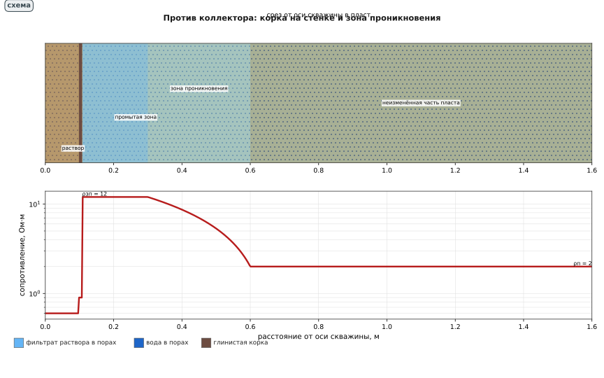

Путь › Зачем ГИС и как бурение портит или улучшает данные › Шаг 4 из 34
Корка сужает скважину против коллектора
В книге: «Особенности вскрытия разрезов на глинистом растворе» стр. 90
Опирается на: шаг 2 «Набор методов зависит от бурового раствора» (предпосылка), шаг 3 «Какие бывают разрезы и коллекторы» (предпосылка)
Суть
Против проницаемого пласта скважина становится уже номинала: на стенке оседает глинистая корка.
Это прямой след того, что жидкость раствора ушла в поры, а не дефект ствола.
В плотных породах диаметр равен номиналу, а в глинах, трещиноватых породах и солях он может расти.
Пороговая идея. Против проницаемого пласта скважина «сужается» из-за глинистой корки — это прямой след фильтрации, а не дефект ствола. модель
Разбор источника
Определите, где наблюдение, вывод или допущение. Раскройте утверждение, чтобы свериться с ответом и цитатой.
В межзерновых коллекторах при бурении на глинистом растворе образуются зоны проникновения фильтрата и глинистые корки; диаметр скважины меньше номинального.
Наблюдение · стр. 90
«К особенностям вскрытия разрезов на глинистом растворе относятся образование в межзерновых коллекторах зон проникновения фильтрата раствора и глинистых корок на стенках скважины»
В плотных сцементированных породах диаметр скважины равен номинальному.
Наблюдение · стр. 90
«В плотных, сцементированных породах диаметр скважины остается равным номинальному»
В глинах, глинистых сланцах и аргиллитах диаметр увеличивается из-за разбухания и вымывания глинистых частиц.
Вывод · стр. 90
«В глинах, глинистых сланцах, аргиллитах за счет разбухания глинистых частиц и вымывания их струей бурового раствора диаметр скважины увеличивается.»
В трещиноватых разрушенных породах, карсте, каменных и калийных солях диаметр тоже может увеличиваться.
Наблюдение · стр. 90
«В трещиноватых разрушенных породах, зонах развития карста и растворимых каменных и калийных солях диаметр скважины также может увеличиваться»
Как это работает
Что происходит против коллектора
Возьмём бурение на глинистом растворе. Против межзернового коллектора — породы с порами между зёрнами — раствор ведёт себя особо. Его жидкая часть, фильтрат раствора, уходит в пласт. Так вокруг скважины возникает зона проникновения — часть пласта, куда проник фильтрат. стр. 90
«К особенностям вскрытия разрезов на глинистом растворе относятся образование в межзерновых коллекторах зон проникновения фильтрата раствора и глинистых корок на стенках скважины»

Глинистые частицы раствора в поры не проходят и оседают на стенке. Получается глинистая корка — слой глины против проницаемого пласта. Поэтому фактический диаметр скважины становится меньше номинального диаметра, то есть диаметра долота. стр. 90
Почему корка растёт только против коллектора
Корка — это частицы, отфильтрованные на стенке, когда жидкость уходит в поры. Если порода непроницаема, жидкость не уходит. Тогда и корка не образуется. стр. 90
Другие породы — другой диаметр
В плотных, сцементированных породах диаметр скважины остаётся равным номинальному. стр. 90
«В плотных, сцементированных породах диаметр скважины остается равным номинальному»
В глинах, глинистых сланцах и аргиллитах диаметр увеличивается. Автор объясняет причину: глинистые частицы разбухают, и струя раствора их вымывает. стр. 90
«В глинах, глинистых сланцах, аргиллитах за счет разбухания глинистых частиц и вымывания их струей бурового раствора диаметр скважины увеличивается.»
Нюансы
Диаметр может увеличиваться и в других породах. Это трещиноватые разрушенные породы, зоны карста, растворимые каменные и калийные соли. Значит, расширение ствола само по себе ещё не говорит, какая это порода. стр. 90
«В трещиноватых разрушенных породах, зонах развития карста и растворимых каменных и калийных солях диаметр скважины также может увеличиваться»
Цифры и условия
- Коллектор с коркой: фактический диаметр меньше номинального. стр. 90
- Плотные сцементированные породы: диаметр равен номинальному. стр. 90
- Глины, трещиноватые породы, карст и соли: диаметр может быть больше номинального. стр. 90
- Условие: всё это описано для бурения на глинистом растворе. стр. 90
Что это значит для данных модель
Кривая диаметра скважины (кавернограмма) несёт литологическую информацию: сужение указывает на коллектор с коркой, расширение — на глины, трещиноватые породы или соли.
- Вход
- фактический диаметр скважины и номинальный диаметр
- Выход
- признак: сужение / номинал / расширение
- Где ломается
- Расширение неоднозначно (глины, трещины, карст, соли); без корки (бурение на воде или нефильтрующемся растворе) признак сужения пропадает.
- гипотеза Признак «фактический диаметр минус номинальный» — простая и информативная фича для автоматической разметки коллекторов.
Где здесь ручной труд специалиста
- Входные данные
- кавернограмма, диаметр долота
- Ручные шаги
- сравнение диаметра с номиналом по интервалам
- Точки суждения
- причина расширения ствола: глина, трещиноватость или соль
- Время
- быстро по одной кривой, но требует сверки с другими методами
- Типичные ошибки
- считать любое расширение глиной
Аналогия модель
Как побочный след работы системы: «отложения» (корка) появляются только там, где был поток (фильтрация), — по следу судят о проницаемости.
Где аналогия перестаёт работать: След зависит от свойств раствора: при другом растворе поток есть, а следа нет.
Глубже
Почему корка растёт именно против коллектора модель
Корка — это глинистые частицы, отфильтрованные на стенке, когда жидкость уходит в поры. Если порода непроницаема, жидкость не уходит и корка не образуется.
Новые понятия
- фильтрат раствора (mud filtrate)
- Жидкая часть бурового раствора, которая проникает из скважины в проницаемый пласт. стр. 90 модель
- зона проникновения (invaded zone)
- Часть пласта вокруг скважины, куда проник фильтрат раствора. стр. 90 модель
- глинистая корка (mud cake)
- Слой глинистых частиц на стенке скважины против проницаемого пласта. стр. 90 модель
- номинальный диаметр (bit size)
- Диаметр скважины, равный диаметру долота; с ним сравнивают фактический диаметр. стр. 90 модель
- межзерновой коллектор (intergranular reservoir)
- Коллектор, где пустоты — поры между зёрнами породы. стр. 90 модель
Проверь себя
Верный ответ: Глины, глинистые сланцы, аргиллиты; Трещиноватые разрушенные породы и зоны карста; Каменные и калийные соли
Расширение дают глины, трещиноватые породы, карст и соли; против коллектора с коркой ствол, наоборот, сужается. Где это в тексте (стр. 90) →
Расставьте по порядку, как против коллектора появляется сужение ствола.
Перетащите пункты (мышью или пальцем за ⠿) или двигайте кнопками ↑ ↓.
- Глинистые частицы оседают на стенке и образуют корку
- Фактический диаметр становится меньше номинального
- Фильтрат раствора уходит в поры пласта
Верный ответ: Фильтрат раствора уходит в поры пласта → Глинистые частицы оседают на стенке и образуют корку → Фактический диаметр становится меньше номинального
Корка — это частицы, отфильтрованные на стенке, когда жидкость уходит в поры; корка и сужает ствол. Где это в тексте (стр. 90) →
Источник
Все утверждения шага с дословной цитатой автора и страницей книги (по PDF).
В межзерновых коллекторах при бурении на глинистом растворе образуются зоны проникновения фильтрата и глинистые корки; диаметр скважины меньше номинального. наблюдение
«К особенностям вскрытия разрезов на глинистом растворе относятся образование в межзерновых коллекторах зон проникновения фильтрата раствора и глинистых корок на стенках скважины»
В плотных сцементированных породах диаметр скважины равен номинальному. наблюдение
«В плотных, сцементированных породах диаметр скважины остается равным номинальному»
В глинах, глинистых сланцах и аргиллитах диаметр увеличивается из-за разбухания и вымывания глинистых частиц. вывод
«В глинах, глинистых сланцах, аргиллитах за счет разбухания глинистых частиц и вымывания их струей бурового раствора диаметр скважины увеличивается.»
В трещиноватых разрушенных породах, карсте, каменных и калийных солях диаметр тоже может увеличиваться. наблюдение
«В трещиноватых разрушенных породах, зонах развития карста и растворимых каменных и калийных солях диаметр скважины также может увеличиваться»
На этот шаг опираются: шаг 5 «Водоотдача и давление раствора», шаг 6 «Пресный или солёный фильтрат», шаг 7 «Бурение на воде и без фильтрации», шаг 14 «Прямые признаки коллектора на диаграммах».